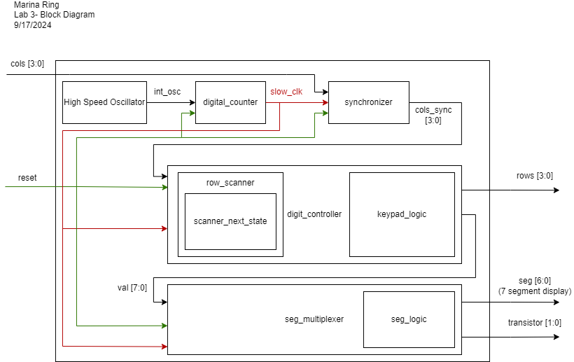

Lab 3: Keypad Scanner
Introduction
In this lab, I was required to take my multiplexed display from Lab 2 and combine it with a keypad to display user inputs. This lab was really a test in implementing good synchronous sequential design, it forced you to really think out and plan the design in order to not violate those design principles. In addition to the multiplexing of the display, I needed to implement a scanning system to read the matrix keypad as well as a method for switch debouncing. I also needed to be very thorough with the simulations of my design to catch timing and other kinds of pesky bugs! See the E155 Lab 3 Page for a more detailed overview of the specifications and instructions for this lab.
All code written for this lab can be found on my E155 Lab 3 Repository on Github.
Setup and Circuitry
A picture of my completed circuit!
On the left is a picture of my final circuit setup, the circuit diagram for this circuit is shown at the bottom of this section. The circuitry for the seven segment display remained unchanged from
the previous lab. Two 2N3906 PNP transistors were used along with two 1.2kOhm resistors to provide power to the dual display and stay below maximum current draw for the FPGA. See my write up for
Lab 2 to learn more about these design choices! I used internal pull up resistors of 3.3kOhms in the FPGA to complete the switch circuits for the matrix keypad.
One important consideration when working with something like the keypad matrix is switch bouncing. When a button is pressed, the input may take some time to settle. On the left is an image of the oscilliscope reading voltage at one of the columns of the keypad when a button is pressed. As you can see, the input remains unstable for around 1 millisecond. Considering a 24 MHz signal, that consists of \[N = 10^{-3} * 24*10^{6}= 24000 cycles\]
The circuit schematic below details the Upduino pins I used to power the display and keypad. Since the MAN6410 is a common anode display, 3.3V is supplied at the
anode and each pin acts as a cathode. To turn a segment on, a pin is set to low or 0 and so current can flow down that path. To turn a segment off, the pin is
set back to high or 1. I used the internal pullup resistors in the FPGA for the keypad display, so a low input, or 0, from one of the columns indicates the switch is closed and a button is pressed
in the keypad. A high input, or 1, indicates that the switch is open and the button is not pressed. The pin assigments are displayed in the circuit diagrams below.
State Definitions and Encodings
A state transition diagram for this system. On the left is a state transition diagram depicting the finite state machine I designed for this project. I used a finite state machine model because of the importance of tracking states in this project. I ended up having five different types of states: a column-scanning state in which one row is high and columns are read (RC0, RC1, RC2, RC3), a buffer state to account for delays in synchronization (R0, R1, R2, R3), a debouncing state in which debouncing occurs after a button has been pressed (D0, D1, D2, D3), a pulse state which signals digits to change after debouncing is completed (P0, P1, P2, P3), and a waiting state which waits until a button is released to prevent multiple simultaneous button reads (W0, W1, W2, W3). These states implement the specifications of the project to register only one button click per button and to not read other buttons while one button is pressed. In this case, 1 indicates a button being pressed and 0 indicates no buttons pressed.
Below, I have included tables detailing all of the state transitions as well as the output for each state. Because I chose a switch system using pullup resistors, turning a row "on" meant sending a low signal, or 0. Similarly, reading a column to be "on" meant reading a low signal, or 0.

Software and Verification
 A block diagram model for this system. On the left is a block diagram visualizing the Verilog modules that I used in this lab and their inputs, outputs, and connections. I created separate modules to implement clock slow down (digital_counter), synchronization of asynchronous inputs (synchronizer), reading keypad inputs and converting to a value (digit_controller), and then converting that value to be displayed on the dual seven segment display. The multiplexing module for the dual seven segment display was largely reused from Lab 2. The module was slightly modified to account for a slower clock, as discussed later in this section. Row scanning was separated as a module in order to isolate any errors in that process. In this lab, timing is particularly important, so creating submodules helped me catch errors early on.
I chose to use a slower clock signal for the whole system in this lab, I found the 24 MHz clock signal from the FPGA too fast for keypad scanning. The propagation time through the circuitry is slower than the clock switching, causing unpredictable behavior. Instead, I slowed down the clock in a clock divider module called digital_counter using an eight bit counter. The clock is high once the most significant digit is 1 and low otherwise. I aimed for a frequency of approximately 100 kHz for my clock. \[ f_{digits} = \frac{f_{clk}}{2^{N}} \] \[ f_{digits} = \frac{24*10^{6}}{2^{8}} = ~93 kHz\] From Lab 2, I found that multiplexing the display also needed to occur at a lower frequency as, again, the propagation time through the circuit is slower than the clock switching, causing the displayed digits to "bleed" together. From that lab, I slowed multiplexing from the 24 MHz FPGA clock frequency to 3 kHz using a 12 bit counter. Since I slowed down the clock before passing it into the multiplexing module, I needed to lower the amount bits of the counter to slow down to the same 1~5kHz range I identified in the previous lab. I chose a 5 bit counter to produce a frequency of around 1.5 kHz. The digit that is powered changes once the counter overflows, or after each digit is 1. \[ f_{digits} = \frac{f_{clk}}{(2*2^{N}} \] \[ f_{digits} = \frac{100*10^{3}}{2*2^{5}} = 1562.5 kHz\]
I wrote a testbench for each module dealing with the keypad with corresponding test vectors. See Lab 2 for more information on how I tested the dual seven segment display. The outputs to these tests are shown below.
The ModelSim waveform output of the row_nextstate testbench
The ModelSim waveform output of the row_scanner testbench
The ModelSim waveform output of the dig_controller testbench
After testing, I successfully compiled and uploaded the Verilog modules to the Upduino. The design meets all of the requirements.
I struggled a lot with some stubborn latches, but after a lot of debugging, I can confidently say my keypad works!
This lab took me an estimated 28 hours to complete.